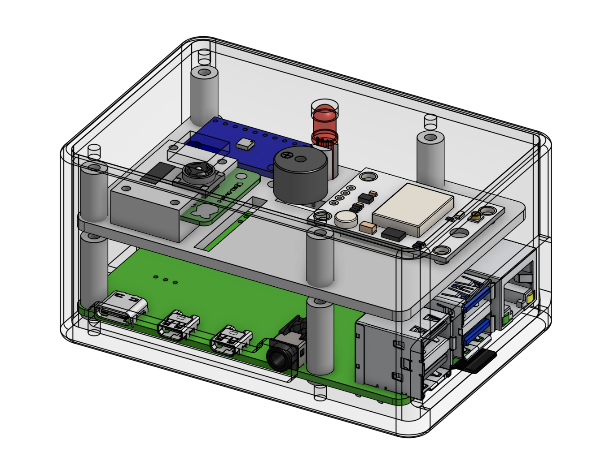
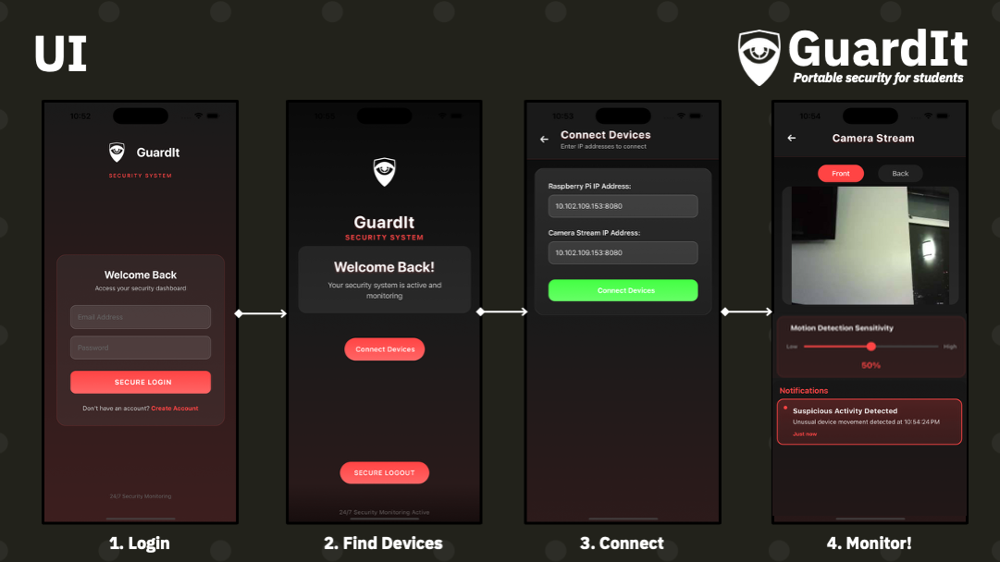

Project 01 · Summer program / Team of 5
Theft-Deterrent Security System
01 My role & contribution
I owned the CAD and co-owned the wiring on a five-person team: I designed the full device in OnShape and split the wiring of the entire system with one teammate, while my teammates wrote the software.
- CAD: I did all of the CAD for the product in OnShape, designing the physical device that houses the system.
- Wiring: I split the wiring of the full system with one teammate, connecting the Raspberry Pi, camera, alarm, and flashing light into one working product.
- Research & pitch: Alongside my teammates, I helped validate demand through surveys and interviews and pitch the product as a startup venture.
02 Problem & constraints
People often have to leave their belongings unattended in places like libraries, cafés, or airports, with no way of knowing if someone takes them. We set out to build an affordable device that watches over your things and alerts you the moment someone gets too close or takes an item. The challenge was building a fully working prototype that customers would actually want in under three weeks, along with a plan to grow it into a company.
03 Process & technical details
We started from the program's theme of "connecting with one another," narrowed hundreds of ideas down to one, and then I designed the device's casing around a Raspberry Pi, refining it through several rounds of fit issues until it held every component cleanly.
- Research & concepts — Each of us brainstormed 50 ideas around the program's theme. We discussed them as a group and used a decision matrix to choose the theft-deterrent device.
- Design — We first chose the Raspberry Pi and the components it would run. We originally wanted a small, slim device, but decided a larger, more intimidating one would deter theft better. I designed a mounting layer on top of the Raspberry Pi to hold every component, with openings in the casing for the LED and camera. I split the case into three parts: a main casing for five faces, a mounting layer for all the components, and a lid as the final face. This kept the design simple and easy for the team to build around.
- Iteration — My first design used two forward-angled cameras for about 180° of view. For the prototype, we switched to one internally mounted camera and a webcam mounted on the back. Because I fit the case tightly to the Raspberry Pi's shape, early versions blocked some ports, including the microSD slot we needed. I went through several iterations to fix the fit until the casing worked well.
- Build & test — We 3D printed the casing, and I split the wiring of the full system with one teammate, connecting the Raspberry Pi, cameras, alarm, and LED inside the case. We tested the prototype in a restaurant, across our dorm building, and outdoors. In each setting, we walked past it at a distance, walked toward it, reached for it, and picked it up and shook it, while monitoring everything through the app to confirm that push notifications and the live camera feed worked when they were needed.
- Validation — Once the prototype and financials were done, we surveyed our program cohort and friends and posted on Reddit to gauge how well the product met people's needs and whether they would use it.

